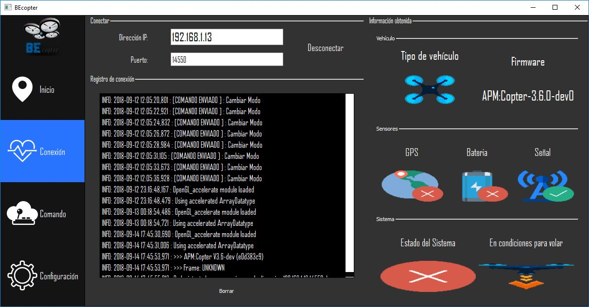

Pestaña de Conexión¶
En esta pestaña como su nombre si indica se brindan las opciones referentes a la conexión con el vehículo. Además, muestra información (una vez conectado) del estado del vehículo, como también los mensajes que se intercambian.
{kind=link}
En la región de conectar, tenemos disponible de dos campos. El primero es para ingresar el IP de red asignado a la maquina en el cual está corriendo BEcopter. Debemos prestar atención en que debemos estar conectados a la misma red al que está conectado el vehículo. Una vez ingresado ese valor y dejando por defecto el puerto ya asignado (siempre y cuando estos valores sean los mismos que estén configurados en el vehículo) para más información se puede consultar el siguiente link de Navio2
En el apartado de Registro de conexión obtendremos toda información referente a los mensajes que hemos enviado al vehículo y en contraparte con respecto al vehículo.
Advertencia
Por lo tanto, es de buena práctica utilizar dicha información en caso de que ocurriera algún tipo de error o inconsistencia.
Una vez conectados al vehículo en la región de Información obtenida se mostrarán datos tales como : * Tipo de vehículo: Ya sea tricóptero, hexacóptero, cudricóptero, etc. * Firmware: La información mostrada aquí, corresponderá a la versión del firmware instalado en el vehículo.
Atención
Corroborar que su vehículo se encuentre actualizado.
Antes de poder realizar un despegue es de suma importancia que el vehículo se encuentre en condiciones para realizarlo Es por tal motivo, que antes de comenzar a iniciar con las misiones o un despegue se deberá controlar que todos los sensores como GPS, Batería, Señal , posicionamiento estén correctamente en condiciones. En caso contrario el inicio de un despegue será simplemente rechazado.
En el apartado de Sistema tenemos dos iconos, el primero representa el resultado si el vehículo está bien posicionado para iniciar el vuelo, para obtener este valor se comprueba que el vehículo no se encuentre muy inclinado (ya sea vertical o horizontalmente) , que no este en movimiento y los sensores calibrados, como compas, giróscopo y acelerómetro. Luego, el siguiente icono «es una traba de seguridad» con el fin de no incidir en un vuelo accidental, por lo tanto, una vez que el vehículo se encuentre en condiciones, es decir, todos los iconos muestren resultados favorables se tendrá que «ARMAR» el vehículo, para realizar esto se deberá enviar un comando mediante un Joystick ordenando a vehículo que este preparado para iniciar su vuelo. Este comando puede ser asignado al Joystick en la pestaña COMANDO.